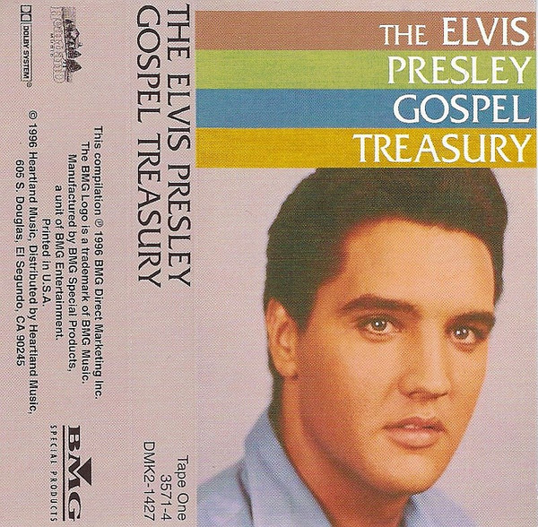

CASSETTE
The Elvis Presley Gospel Treasury
Elvis Presley
Media: M · Sleeve: M
—
Personal
Discogs SuggestedCA$5.67
Discogs MedianCA$5.67
Discogs HighCA$5.67
- Physical Copy ID
- BB-CAS-261
- Year
- 1996
- Label
- BMG, Heartland Music
- Catalog #
- DMK2-1427, 3571-4
- Country
- USUS
- Genre / Style
- Pop, Folk, World, & Country · Gospel, Vocal
Shrink wrap